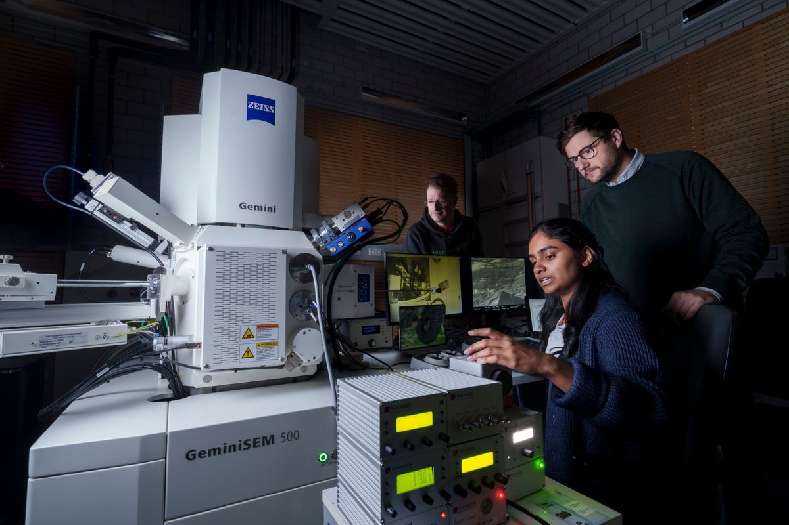

Quest I
Measuring and mimicking biological gradients
Can we build what biology builds? We map keratin and collagen gradients from the nanoscale up, then re-create them with 3D printing and programmable knitting.
Trunk skin, PNAS 2022 · Collagen, Commun. Biol. 2025 · Hair, preprint 2026